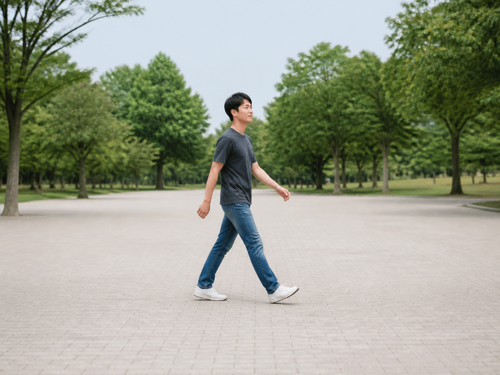
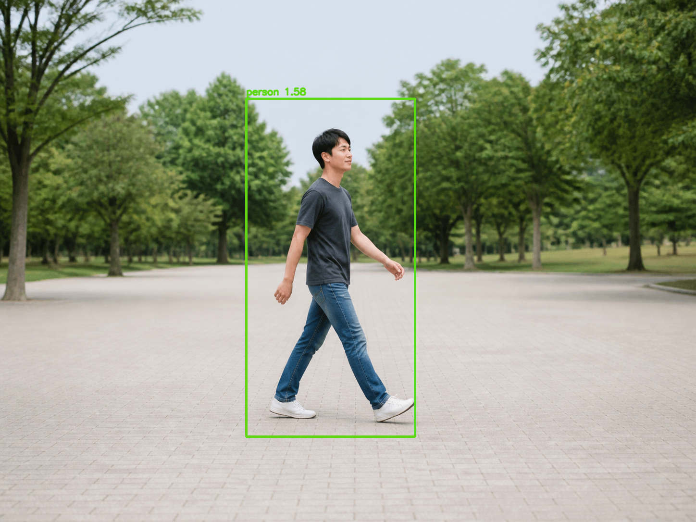

An image or video
A generated full-body pedestrian photograph is bundled for a repeatable first run.
This classical object detector describes local edge directions with HOG, scores many windows with a pretrained SVM, and groups overlapping candidates.
A generated full-body pedestrian photograph is bundled for a repeatable first run.
Each accepted window receives a green rectangle and its SVM decision score.
Segmentation labels pixels. Object detection instead returns a rectangle and category for each object. Module 3 includes it as a related program because both turn visual features into meaningful regions.
A pedestrian’s head, shoulders, torso, arms, and legs create a recognizable arrangement of edges even when clothing colors change.
Measure brightness change and orientation at every pixel.
Accumulate a histogram of orientations in small spatial cells.
Normalize neighboring cells to reduce lighting sensitivity.
Concatenate normalized block histograms into one feature vector.
Coarse silhouette, local edge direction, and spatial arrangement.
Exact color, small pixel changes, and absolute illumination magnitude.
The same 64×128 window moves across successively resized versions of the image so people at different scales can be found.
winStrideSmaller strides check more positions and cost more time.
scaleValues close to 1 search more pyramid levels and improve scale coverage.
hitThresholdLower thresholds retain weaker candidates, increasing recall and false positives.
Nearby windows may all score positively around one person. detectMultiScale groups overlapping rectangles; its group threshold controls how much supporting overlap is required.
The CLI supports both images and videos, validates parameters, and handles a valid no-detection result without failing.

python3 -m venv .venv && source .venv/bin/activate
python -m pip install -r requirements.txtpython main.py --input assets/sample_pedestrian.png --output output/annotated.pngImage/video dispatch, HOG detection, annotations, validation, and clean resource handling.
A classroom-safe generated fixture with one full-body, unoccluded pedestrian.
.mp4 output path. The program preserves source dimensions and frame rate and stops at end-of-stream.Compare results with known ground truth and record the operating parameters.

Expected bundled-sample output at the default threshold: one person detection.
The box substantially overlaps a real pedestrian.
Vertical structures or textured clutter resemble parts of the HOG template.
The score stays below threshold due to pose, scale, blur, or occlusion.
Increase grouping support or apply non-maximum suppression to candidate boxes.
Then tune one parameter at a time and record the precision/recall trade-off.
Resized pyramid levels let one fixed detector window cover several scales.
A lower decision boundary accepts weaker SVM scores.
--hit-threshold 0.25 and compare the count.--scale from 1.03 to 1.08 and measure speed.{kind=link}